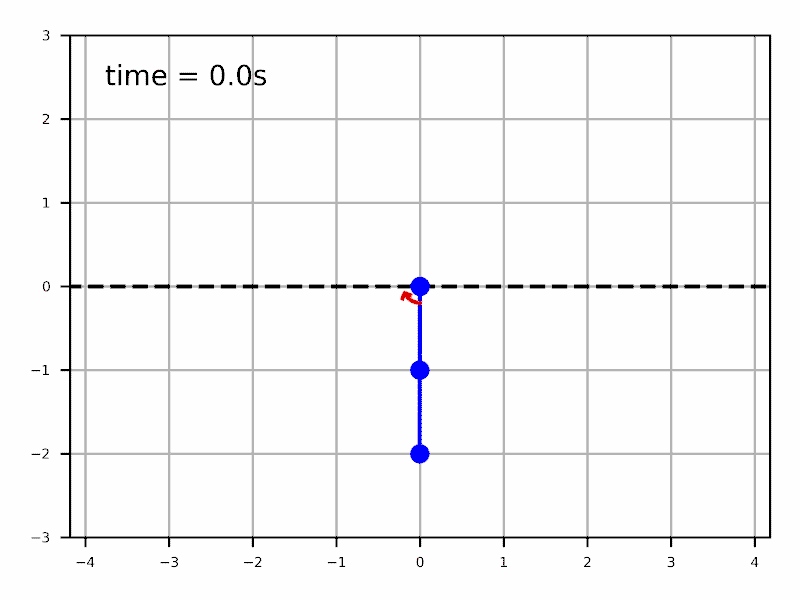
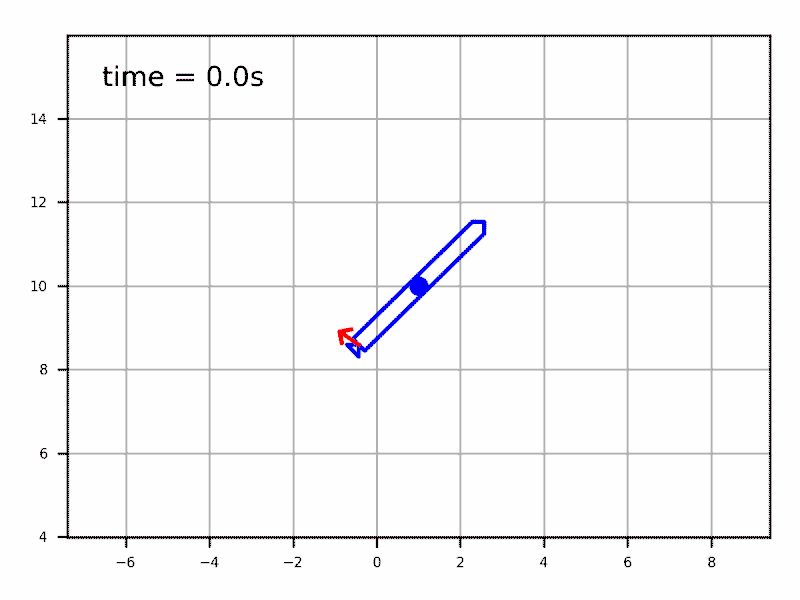
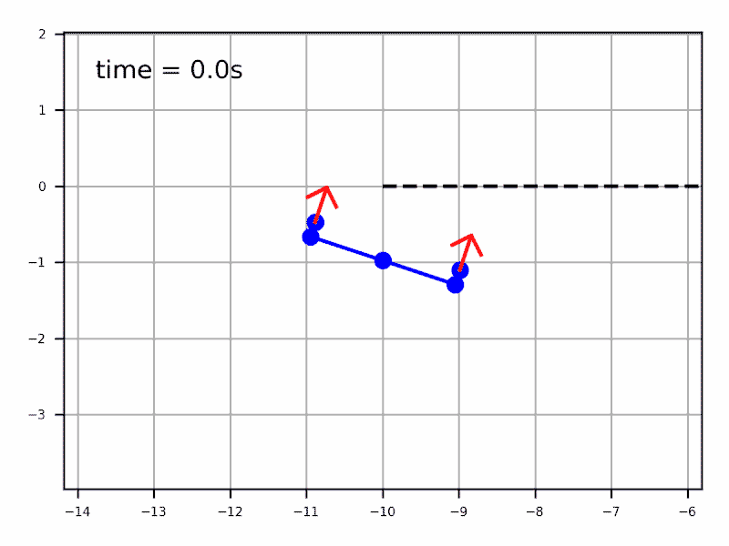
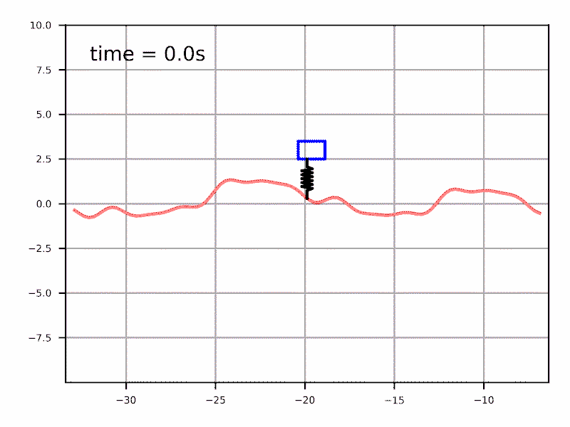

Ce cours présente les outils mathématiques pour analyser le mouvement et synthétiser des algorithmes pour le contrôler, des méthodes classiques basées sur un modèle jusqu'à l'apprentissage par renforcement.
Bras articulés, véhicules autonomes, drones, etc.
Le cours présente des modèles cinématiques et dynamiques courament utilisé pour developper des loi de commandes et planifier des trajectoires pour les principaux types de systèmes robotiques.
UdeS Hiver 2023
Le cours se donnera le vendredi de 9h à 12h au P2-1002. Veuillez me contacter directement (alex.girard@usherbrooke.ca) pour vous inscrire. La page guide pour l'hiver 2023 est ici:
GMC714_Guide_H23
Vidéo de présentation du cours
Génération de trajectoire optimales pour bras robotiques articulés

Synthétiser des loi de commande pour véhicules

Planifier des trajectoires

Synthétiser des loi de commande optimales

Cibles de formation
À la fin de ce cours vous serez en mesure de:
Modéliser et analyser le mouvement des robots en utilisant les outils mathématiques adaptés.
Choisir un type de modèle et une méthode de commande adapté à un problème de contrôle du mouvement.
Mettre en œuvre des algorithmes de commande et de planification de trajectoires pour divers types de systèmes robotiques.
Contenu Détaillé
Semaines
Sujets
Travaux
1
Chapitre 1 - Introduction à la robotique
Tour d’horizon des défis en robotique
Type de modèle (cinématique vs. dynamique)
Équation dynamique commune (F=ma pour robots)
Devoir #1
2 à 5
Chapitre 2 - Bras robotiques articulés
Modélisation et analyse géométrique (matrice Jacobienne)
Modélisation (méthode de Lagrange) et analyse dynamique
Analyse cinématique (espace de travail et singularités) et dynamique (matrice d’inertie, bilan énergétique et stabilité)
Dynamique et comportement des actionneurs
Commande en position, force, impédance et admittance
Stabilité avec la méthode de Lyapunov
Méthode du couple calculé, variante robuste et adaptative
Devoir #2
Devoir #3
Devoir #4
Devoir #5
6 à 9
Chapitre 3 - Véhicules (drones, robots mobiles et véhicules autonomes)
Modèles dynamiques simplifiés (2D, bicyclette, quart de véhicule, courbe d’adhérence des roues, etc.)
Navigation et planification de trajectoires
Méthodes numériques de commande et de planification (programmation dynamique, apprentissage par renforcement, algorithmes de recherche et algorithmes d’optimisation)
Architectures de commande et stabilisation d’une trajectoire en boucle fermée
Devoir #6
Devoir #7
Devoir #8
Examen
10 à 13
Chapitre 4 - Tour d’horizon des méthodes avancées en robotique
Présentations sur les derniers avancements dans le domaine
Études de cas et exemples (robots marcheurs, manipulation, drones, véhicules autonomes, exosquelettes, etc.)
Projet de session
Un projet au choix de l'étudiant impliquant des notions du cours.
L’évaluation du projet consistera en une présentation finale devant la classe
Déroulement du cours
Périodes de formation (3hr/semaines) :
Les périodes de formation seront principalement des leçons magistrales et des démonstrations en classe dirigée par l’enseignant.
Travaux pratiques (2hr/semaines):
Les travaux pratiques consisteront en des séances en classe d’exercices dirigés soit théoriques (papier-crayon) soit informatique (basé sur un site web interactif) ainsi que des périodes de consultations pour les devoirs ou le projet.
Étude personnelle :
Des lectures et l’écoute de vidéos seront suggérées à chaque semaine pour complémenter les leçons magistrales.
Modalités d'évaluation
Devoirs:
Pour les 8 premières semaines du cours il y aura des devoirs hebdomadaires.
Seul les 5 meilleurs seront considérés dans la note, les étudiants peuvent donc choisir de travailler et remettre seulement 5 devoirs.
Les étudiants qui auraient déjà suivi le cours GRO640 devront choisir 5 devoirs parmi 6 devoirs, deux seront exclus car redondant avec le cours.
Les devoirs consisteront en un mixte d’exercices analytiques (papier crayon) et numériques (à faire à l’ordinateur).
L’évaluation des devoirs sera faite de façon globale avec une échelle descriptive de cinq niveaux.
Une rétroaction détaillée sur les devoirs sera faite sur demande.
Les devoirs seront à remettre au début du cours de la semaine qui suit la diffusion du devoir (les dates exactes seront communiquées à chaque semaine).
Examen:
Il y aura un examen théorique de 3h à la semaine 9 du cours.
Une feuille de note manuscrite personnelle recto-verso sera permise durant les examens.
Projet:
Un projet individuel au choix des étudiant sera l’activité principale du dernier mois du cours.
Le projet devra impliquer des notions de modélisation et/ou commande reliées aux sujets abordés dans le cours.
La définition du projet sera validée par l’enseignant en cours de session.
Les attentes sont des résultats théorique ou numérique (simulations).
L’évaluation du projet consistera en une présentation finale devant la classe.